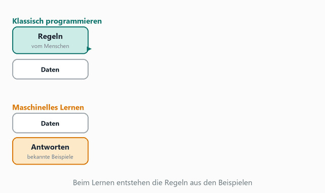
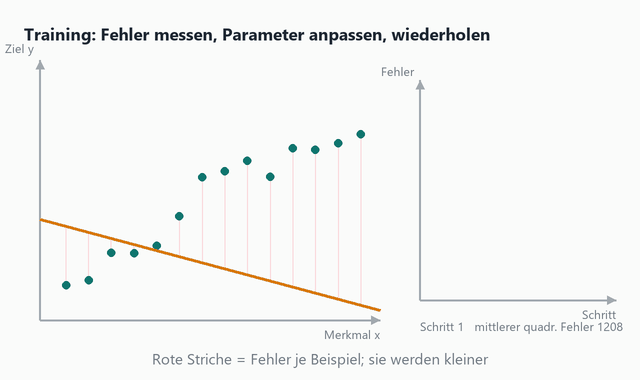
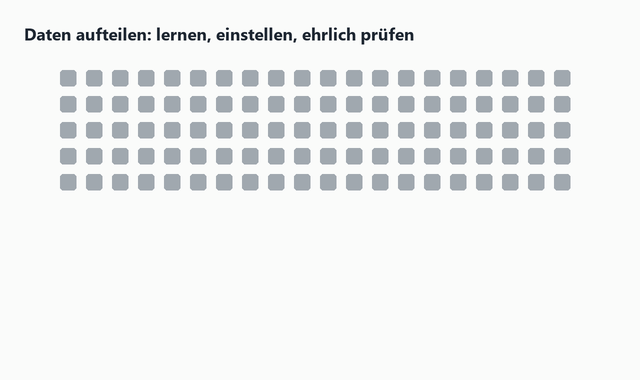
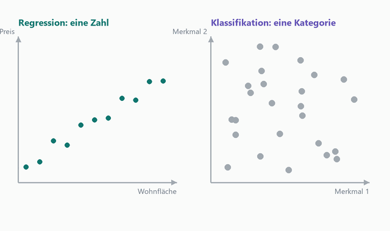
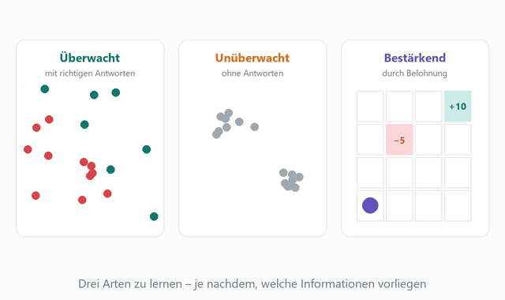
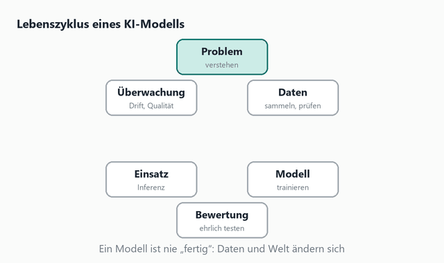

Dieses Modul legt das Fundament für den ganzen Kurs zum Bachelor Professional in KI und Maschinellem Lernen. Sie brauchen kein Vorwissen: Jeder Begriff kommt zuerst mit einem Bild aus dem Alltag und danach mit der genauen Erklärung, wie Sie sie in der Prüfung brauchen. Am Ende können Sie KI-Vorhaben im Betrieb richtig einordnen – die wichtigste Grundlage, um später Projekte zu planen, zu bewerten und zu führen.
Ihr Handy entsperrt sich mit Ihrem Gesicht. Das Navi kennt den Stau, bevor Sie ihn sehen. Das Postfach schiebt Betrugsmails in den Spam-Ordner. Der Streamingdienst schlägt Ihnen eine Serie vor, die Ihnen tatsächlich gefällt. Hinter all dem steckt dasselbe Prinzip: Ein Computer hat aus sehr vielen früheren Fällen gelernt und schätzt damit einen neuen Fall ein.
| Bereich | Typischer KI-Einsatz | Was das Modell liefert |
|---|---|---|
| Produktion | Kamera prüft Bauteile, Sensoren melden drohende Ausfälle | „in Ordnung / Ausschuss“, Restlebensdauer in Stunden |
| Vertrieb | Absatzprognose, Kündigerwarnung, Preisempfehlung | Stückzahl je Woche, Kündigungswahrscheinlichkeit |
| Verwaltung | Belege auslesen, Anfragen sortieren, Texte entwerfen | Rechnungsbetrag, Kategorie, Textvorschlag |
| Personal | Dienstpläne optimieren, Wissen im Intranet finden | Planvorschlag, Antwort mit Quelle |
| Kundenservice | Chat-Assistent, Weiterleitung an die richtige Stelle | Antworttext, Zuständigkeit |
Wo ein Computer aus vielen früheren Beispielen eine Einschätzung für einen neuen Fall ableitet, steckt fast immer maschinelles Lernen.
In Teil 2 der schriftlichen Prüfung beginnen Aufgaben oft mit „Nennen Sie drei Einsatzmöglichkeiten von KI in der Muster GmbH“. Nennen Sie dann Beispiele aus der beschriebenen Situation und jeweils, was das Modell konkret ausgibt – das zeigt, dass Sie den Fall verstanden haben.
Ein Taschenrechner nimmt uns Rechenarbeit ab. KI nimmt uns eine andere Art von Arbeit ab: erkennen, einschätzen, entscheiden – Aufgaben, für die wir Menschen normalerweise nachdenken müssen.
Die KI „denkt“ dabei nicht wie wir. Sie rechnet mit Wahrscheinlichkeiten. Sie hat kein Bewusstsein und keine Absichten.
Künstliche Intelligenz (KI) ist der Oberbegriff für Computersysteme, die Aufgaben lösen, für die Menschen Intelligenz brauchen: wahrnehmen, verstehen, schlussfolgern, entscheiden, lernen.
Die EU-KI-Verordnung (Art. 3 Nr. 1) definiert ein KI-System als maschinengestütztes System, das für explizite oder implizite Ziele aus den Eingaben ableitet, wie es Ausgaben wie Vorhersagen, Inhalte, Empfehlungen oder Entscheidungen erzeugt, und das mit unterschiedlicher Autonomie arbeitet.
| Regelbasierte KI | Lernende KI (maschinelles Lernen) | |
|---|---|---|
| Wer macht die Regeln? | Menschen schreiben Wenn-dann-Regeln | Das System leitet sie aus Beispielen ab |
| Beispiel | Expertensystem für Diagnosen, Schachprogramm mit festen Regeln | Spamfilter, Bilderkennung, Sprachmodell |
| Stärke | Nachvollziehbar, vorhersehbar | Löst Aufgaben, für die niemand Regeln formulieren kann |
| Schwäche | Starr; versagt bei Fällen, an die niemand gedacht hat | Braucht viele gute Daten; kann sich irren |
Schwache (enge) KI löst eine klar umrissene Aufgabe – alle heutigen Systeme gehören dazu, auch große Sprachmodelle. Starke KI (auch AGI, Artificial General Intelligence) wäre allgemein intelligent wie ein Mensch, in beliebigen Aufgaben. Sie existiert bisher nicht.
KI = Systeme, die Denkaufgaben übernehmen. Nicht jede KI lernt – aber die moderne KI fast immer.
Kurz geprüft: Ein Programm vergibt Rabatte nach der festen Regel „über 1.000 € Umsatz → 5 %“. Ist das maschinelles Lernen?
Denken Sie an russische Matroschka-Puppen: In der großen Puppe steckt eine kleinere, darin eine noch kleinere. Genauso stecken die vier Begriffe ineinander. Jeder innere Begriff ist ein Teilbereich des äußeren.
| Begriff | Einfach gesagt | Beispiel |
|---|---|---|
| Künstliche Intelligenz | Alles, was Denkaufgaben übernimmt – auch mit festen Regeln | Expertensystem, Routenplaner |
| Maschinelles Lernen (ML) | Das System lernt Regeln aus Beispielen | Kündigerprognose, Spamfilter |
| Deep Learning (DL) | ML mit tiefen neuronalen Netzen aus vielen Schichten; lernt direkt aus Bild, Ton, Text | Bauteilprüfung per Kamera, Spracherkennung |
| Generative KI | Erzeugt neue Inhalte statt nur zu bewerten | Chat-Assistent, Bild- und Codegenerator |
Jedes Deep Learning ist maschinelles Lernen, und jedes maschinelle Lernen ist KI – aber nicht umgekehrt.
„KI“ und „Chatbot“ sind nicht dasselbe. Chat-Assistenten sind nur der innerste Kreis. Wer in der Prüfung KI mit generativer KI gleichsetzt, verschenkt Punkte – die meisten betrieblichen KI-Anwendungen sind klassische Vorhersagemodelle.
Eine erfahrene Disponentin weiß, dass montags und vor Feiertagen mehr bestellt wird. Dieses Wissen steckt in ihrem Kopf – und in den Bestelldaten der letzten Jahre. Ein Modell kann es nur aus den Daten holen.
Für maschinelles Lernen wird Wissen in Daten abgebildet: Jede Zeile ist ein Beispiel (Datensatz, Instanz), jede Spalte ein Merkmal (Feature). Die Größe, die vorhergesagt werden soll, heißt Zielgröße oder Label.
Das Modell lernt den Zusammenhang zwischen Merkmalen und Zielgröße – und nur den, der in den Daten steckt.
| Kunde | Vertragsdauer (Monate) | Beschwerden | Tarif | Rechnung (€) | Gekündigt? |
|---|---|---|---|---|---|
| 1 | 34 | 0 | Basis | 29 | nein |
| 2 | 5 | 3 | Premium | 79 | ja |
| 3 | 18 | 1 | Basis | 35 | nein |
Merkmale: Vertragsdauer, Beschwerden, Tarif, Rechnung. Zielgröße (Label): Gekündigt.
Ein Modell weiß nur, was in seinen Daten steckt. Fehlt ein wichtiger Einfluss in den Daten, kann es ihn nicht lernen.
Die Kunden-ID ist kein sinnvolles Merkmal. Sie trägt kein Wissen über das Kündigen – ein Modell, das sie nutzt, lernt Zufallsmuster auswendig.
Kurz geprüft: Ein Versandhändler will vorhersagen, ob ein Paket zu spät kommt. Was ist hier die Zielgröße?
Einem Kind erklärt niemand per Regel, was einen Hund von einer Katze unterscheidet. Es sieht viele Tiere, jemand sagt „Hund“ oder „Katze“, das Kind liegt manchmal falsch, wird korrigiert – und irgendwann erkennt es neue Tiere sicher.
Ein Modell ist eine Rechenvorschrift mit vielen Stellschrauben, den Parametern. Beim Training vergleicht das Verfahren die Vorhersagen mit den richtigen Antworten, misst den Fehler (Verlust, englisch loss) und verstellt die Parameter so, dass der Fehler kleiner wird. Das wiederholt sich viele Male.


Parameter lernt das Modell selbst. Hyperparameter legen Menschen vorher fest – etwa wie schnell gelernt wird (Lernrate) oder wie tief ein Entscheidungsbaum werden darf.
Lernen heißt: Parameter so lange verstellen, bis die Vorhersagen auf den Trainingsbeispielen möglichst wenig falsch sind.
„Erklären Sie den Unterschied zwischen Parameter und Hyperparameter“ ist eine Standardfrage. Kurz: Parameter werden gelernt, Hyperparameter werden vorgegeben.
Wer für eine Prüfung nur die Musterlösungen auswendig lernt, schreibt eine glatte 1 – solange genau diese Aufgaben drankommen. Bei neuen Aufgaben fällt er durch. Ehrlich ist nur eine Prüfung mit Aufgaben, die man vorher nicht gesehen hat.
Die Daten werden vor dem Training aufgeteilt: Trainingsdaten zum Lernen der Parameter, Validierungsdaten zum Einstellen der Hyperparameter und zum Vergleichen von Modellen, Testdaten nur ganz am Ende für eine ehrliche Schätzung, wie gut das Modell bei neuen Fällen ist.

| Begriff | Was passiert | Erkennbar an |
|---|---|---|
| Overfitting (Überanpassung) | Modell lernt Trainingsbeispiele samt Zufall auswendig | Training sehr gut, Test deutlich schlechter |
| Underfitting (Unteranpassung) | Modell ist zu einfach für den Zusammenhang | Training und Test schlecht |
| Data Leakage | Informationen aus den Testdaten oder aus der Zukunft gelangen ins Training | Unglaublich gute Testwerte, später Enttäuschung im Betrieb |
Bei Zeitreihen (z. B. Absatz je Woche) wird nicht zufällig, sondern zeitlich getrennt: mit der Vergangenheit trainieren, mit dem jüngsten Zeitraum testen. Sonst „kennt“ das Modell die Zukunft.
Testdaten sind wie die echte Prüfung: Sie bleiben bis zum Schluss verschlossen – sonst ist das Ergebnis geschönt.
„Wir haben auf allen Daten trainiert und auf allen Daten 99 % erreicht.“ Diese Zahl sagt nichts darüber, wie gut das Modell neue Fälle erkennt. In Situationsaufgaben wird genau dieser Fehler gern versteckt.
Kurz geprüft: Ein Modell erreicht 99 % im Training und 72 % im Test. Was liegt vor?
Eine Maklerin schätzt den Preis einer Wohnung: größer, neuer und zentraler heißt teurer. Sie gibt eine Zahl an, keinen Daumen hoch oder runter.
Bei der Regression ist die Zielgröße metrisch – eine Zahl auf einer durchgehenden Skala: Preis, Absatzmenge, Temperatur, Restlebensdauer, Lieferzeit. Das Modell lernt, wie sich die Zielgröße mit den Merkmalen verändert.

Ein Modell schätzt den Mietpreis: Miete = 120 € + 11,50 € · Wohnfläche. Für 70 m² ergibt sich 120 + 11,50 · 70 = 925 €. Die Zahl 11,50 heißt: Jeder zusätzliche Quadratmeter erhöht die geschätzte Miete um 11,50 €.
Wie gut eine Regression ist, misst man mit dem durchschnittlichen Fehler, z. B. MAE oder RMSE (Modul 4).
Regression = Vorhersage einer Zahl.
Am Flughafen wird jeder Koffer einem Band zugeordnet: Frankfurt, München, Hamburg. Es gibt nur feste Fächer – kein „ein bisschen Frankfurt“.
Bei der Klassifikation ist die Zielgröße eine Kategorie (Klasse). Viele Verfahren geben zusätzlich eine Wahrscheinlichkeit aus, z. B. „Spam mit 93 %“. Erst eine Schwelle (etwa 50 %) macht daraus eine Entscheidung.
| Art | Bedeutung | Beispiel |
|---|---|---|
| Binär | genau zwei Klassen | Kündigt ja/nein, Bauteil in Ordnung/Ausschuss |
| Mehrklassen | eine von mehreren Klassen | Anfrage → Abteilung Vertrieb, Technik oder Buchhaltung |
| Multi-Label | mehrere Klassen gleichzeitig möglich | Ein Foto zeigt „Person“ und „Fahrrad“ und „Straße“ |
Klassifikation = Vorhersage einer Kategorie. Die Wahrscheinlichkeit dahinter wird über eine Schwelle zur Entscheidung.
Die logistische Regression ist trotz ihres Namens ein Klassifikationsverfahren – sie schätzt die Wahrscheinlichkeit einer Klasse. Eine beliebte Prüfungsfrage.
Kurz geprüft: Ein Modell schätzt die Wahrscheinlichkeit, dass ein Kunde in den nächsten 90 Tagen kündigt. Welcher Aufgabentyp ist das?
Eine Fahrschülerin fährt, der Fahrlehrer sagt bei jedem Fehler sofort, was richtig gewesen wäre. Lernen mit Lehrer – das ist überwachtes Lernen.
Beim überwachten Lernen (supervised learning) enthält jedes Trainingsbeispiel die richtige Antwort (Label). Das Modell lernt die Abbildung von den Merkmalen auf das Label. Die beiden Aufgabentypen sind Regression und Klassifikation.

Labels kosten oft am meisten Zeit und Geld in einem KI-Projekt. Fehlerhafte Labels („Label-Rauschen“) begrenzen, wie gut ein Modell werden kann.
Überwacht = mit Labels. Ergebnis: eine Zahl (Regression) oder eine Kategorie (Klassifikation).
Sie kippen eine Kiste mit Legosteinen aus und sortieren, ohne dass jemand Fächer vorgibt. Am Ende liegen ähnliche Steine zusammen – nach Farbe, Form oder Größe. Welche Ordnung „richtig“ ist, entscheiden Sie erst danach.
Beim unüberwachten Lernen gibt es keine Labels. Das Verfahren sucht selbst nach Strukturen in den Daten. Typische Aufgaben:
Ein Onlinehändler gruppiert seine Kundschaft nach Kaufhäufigkeit, Warenkorbwert und Zeit seit dem letzten Kauf. Heraus kommen etwa „Stammkunden mit hohem Umsatz“, „Schnäppchenjäger“ und „Eingeschlafene“. Die Namen vergibt danach ein Mensch – das Verfahren liefert nur die Gruppen.
Unüberwacht = ohne Labels. Das Verfahren findet Gruppen, Ausreißer oder Vereinfachungen; die Bedeutung legt ein Mensch fest.
Clustering ist keine Klassifikation. Bei der Klassifikation sind die Klassen vorher bekannt und in den Trainingsdaten markiert; beim Clustering entstehen die Gruppen erst.
Ein Hund lernt „Sitz“, weil es danach ein Leckerli gibt. Niemand zeigt ihm die Bewegung – er probiert, und was belohnt wird, macht er öfter.
Beim bestärkenden Lernen (Reinforcement Learning, RL) handelt ein Agent in einer Umgebung. Er beobachtet einen Zustand, wählt eine Aktion und erhält eine Belohnung (positiv oder negativ). Ziel ist eine Strategie (Policy), die die Summe der Belohnungen auf lange Sicht maximiert.
Zielkonflikt Erkunden oder Ausnutzen (exploration vs. exploitation): Probiert der Agent Neues aus, oder nutzt er, was sich bewährt hat?
Bestärkend = ein Agent lernt durch Ausprobieren, welche Handlungen sich langfristig lohnen.
Eine schlecht gewählte Belohnung wird ausgetrickst: Belohnt man einen Reinigungsroboter für „keinen Schmutz sehen“, lernt er womöglich, die Kamera abzudecken. Die Belohnung muss das eigentliche Ziel treffen.
Ein Lückentext: „Morgens trinke ich eine Tasse ___.“ Sie wissen sofort: Kaffee oder Tee. Niemand musste Ihnen die Lösung geben – die Sprache selbst liefert die Aufgabe und die Antwort.
Beim selbstüberwachten Lernen (self-supervised learning) erzeugt das Verfahren die Labels aus den Daten selbst: Ein Teil wird verdeckt, das Modell soll ihn vorhersagen – etwa das nächste Wort in einem Text. So kann man mit riesigen Mengen ungelabelter Daten lernen.
So entstehen Foundation Models (Basismodelle): sehr große Modelle, die auf breiten Daten vortrainiert sind und für viele Aufgaben angepasst werden können. Große Sprachmodelle sind das bekannteste Beispiel. Die EU-KI-Verordnung nennt sie KI-Modelle mit allgemeinem Verwendungszweck und stellt eigene Pflichten an ihre Anbieter (Modul 12).
Selbstüberwacht = die Daten liefern ihre Aufgaben selbst. So entstehen große Basismodelle, die man danach anpasst.
Fragt die Prüfung nach den „drei Lernparadigmen“, sind überwacht, unüberwacht und bestärkend gemeint. Selbstüberwacht dürfen Sie als moderne Ergänzung nennen – das zeigt Bachelor-Niveau.
Für jede Aufgabe gibt es das passende Werkzeug im Werkzeugkasten: Schraubenzieher, Zange, Säge. Mit allem kann man irgendwie arbeiten – aber nicht mit allem gleich gut.
Ein Algorithmus ist eine eindeutige Handlungsvorschrift in endlich vielen Schritten. Im ML unterscheidet man den Lernalgorithmus (wie trainiert wird) vom fertigen Modell (dem Ergebnis mit gelernten Parametern).
| Familie | Idee | Typisch für | Erklärbar? |
|---|---|---|---|
| Lineare Modelle (lineare, logistische Regression) | gewichtete Summe der Merkmale | Prognosen, Wahrscheinlichkeiten, Basismodell | gut |
| Entscheidungsbäume | Folge von Ja/Nein-Fragen | Tabellendaten, Regeln für Fachabteilungen | gut |
| Ensembles (Random Forest, Gradient Boosting) | viele Bäume stimmen ab | Tabellendaten mit hoher Genauigkeit | mittel |
| Nachbarschaftsverfahren (k-nächste Nachbarn) | „Sag mir, wer deine Nachbarn sind“ | Empfehlungen, kleine Datensätze | mittel |
| Clusterverfahren (k-Means, DBSCAN) | ähnliche Punkte gruppieren | Segmente, Anomalien | mittel |
| Neuronale Netze (Deep Learning) | viele Schichten künstlicher Neuronen | Bild, Sprache, Text, sehr große Daten | gering |
Faustregel: Bei Tabellendaten zuerst ein einfaches, erklärbares Modell als Baseline – oft schlagen Gradient-Boosting-Verfahren dort neuronale Netze. Bei Bildern, Sprache und Text sind neuronale Netze Stand der Technik.
Es gibt nicht „den besten“ Algorithmus. Gewählt wird nach Datenart, Datenmenge, geforderter Genauigkeit und Erklärbarkeit.
Begründen Sie eine Verfahrenswahl immer mit mindestens zwei Kriterien aus der Situation, z. B.: „Tabellendaten mit 20.000 Zeilen und Erklärungspflicht gegenüber dem Kunden – daher Entscheidungsbaum oder logistische Regression statt neuronalem Netz.“
Ein frisch ausgebildeter Mitarbeiter arbeitet nicht für immer allein vor sich hin: Er wird eingearbeitet, bekommt Rückmeldung, wird nachgeschult, wenn sich Produkte ändern. Mit einem KI-Modell ist es genauso.
Ist ein Modell trainiert, wird es auf neue Daten angewendet – das heißt Inferenz. Damit es im Betrieb nützt, muss es in Prozesse und IT-Systeme eingebunden, überwacht und regelmäßig aktualisiert werden.

| Einsatzform | Wie | Beispiel |
|---|---|---|
| Batch | regelmäßig viele Fälle auf einmal | Jede Nacht Kündigungswahrscheinlichkeit für alle Kunden |
| Echtzeit (online) | Anfrage → Antwort in Millisekunden, meist über eine Schnittstelle (API) | Betrugsprüfung bei jeder Kartenzahlung |
| Edge | direkt auf dem Gerät, ohne Cloud | Kamera an der Fertigungslinie, Smartphone |
Im Betrieb ändert sich die Welt: neue Produkte, neues Kundenverhalten, neue Sensoren. Dann passen die gelernten Zusammenhänge nicht mehr – man spricht von Drift. Deshalb wird überwacht und bei Bedarf neu trainiert. Das systematische Vorgehen dafür heißt MLOps (Modul 7). Als Vorgehensmodell für Datenprojekte ist CRISP-DM verbreitet: Geschäftsverständnis, Datenverständnis, Datenvorbereitung, Modellierung, Evaluation, Bereitstellung.
Training ist einmalig, Inferenz läuft täglich – und Überwachung hört nie auf.
Vorausschauende Wartung aus Sensordaten (Regression), optische Qualitätsprüfung (Klassifikation, Deep Learning), Prozessoptimierung.
Absatzprognose (Regression), Empfehlungen (Nachbarschaft), Kundensegmente (Clustering), dynamische Preise.
Betrugserkennung (Klassifikation, Anomalien), Bonitätsbewertung (Hochrisiko nach EU-KI-Verordnung), Schadenschätzung.
Bildauswertung in der Radiologie, Terminplanung, Dokumentation per Spracherkennung.
Routenoptimierung, Ankunftszeiten schätzen, Lagerroboter (bestärkendes Lernen).
Belege auslesen, Anfragen klassifizieren, Antworten entwerfen mit generativer KI und RAG.
Dienstplanung, Wissenssuche; Bewerberauswahl ist nach EU-KI-Verordnung Hochrisiko.
Last- und Einspeiseprognosen für Wind und Sonne, Netzsteuerung.
Ein guter Use Case beantwortet fünf Fragen: Welches Problem lösen wir? Welche Entscheidung unterstützt das Modell? Welche Daten haben wir? Was gibt das Modell aus (Zahl, Klasse, Text)? Woran messen wir den Nutzen (z. B. weniger Ausschuss, kürzere Bearbeitungszeit)?
Ein KI-Anwendungsfall ist erst dann gut beschrieben, wenn klar ist, welche Entscheidung besser wird und woran man das misst.
Für die Transferarbeit suchen Sie genau so einen Anwendungsfall in Ihrem eigenen Betrieb. Notieren Sie schon jetzt Ideen – die fünf Fragen sind ein guter Start für den Themenvorschlag.
1. Soll ein System durch Handeln in einer Umgebung lernen, mit Belohnung für Erfolg?
2. Gibt es für die Trainingsbeispiele die richtige Antwort (Label)?
3. Ist die Antwort eine Zahl oder eine Kategorie?
4. Was wollen Sie finden?
5. Soll neuer Inhalt entstehen (Text, Bild, Code)?
Erst fragen: Handeln mit Belohnung? Dann: Gibt es Labels? Dann: Zahl oder Kategorie?
„Wir haben keine Labels, also unüberwacht“ – oft lassen sich Labels aus dem Prozess gewinnen (wer hat tatsächlich gekündigt?). Prüfen Sie das, bevor Sie zum schwächeren Verfahren greifen.
Kurz geprüft: Ein Energieversorger hat Verbrauchsdaten von 50.000 Haushalten ohne weitere Angaben und will ungewöhnliche Verbräuche (z. B. defekte Zähler) entdecken. Welche Lernart?
| Jahr | Ereignis | Warum es wichtig ist |
|---|---|---|
| 1950 | Alan Turing schlägt den „Turing-Test“ vor | Frage: Kann eine Maschine denken? |
| 1956 | Dartmouth-Konferenz – der Begriff „Artificial Intelligence“ entsteht | Geburtsstunde des Fachgebiets |
| 1958 | Perzeptron von Frank Rosenblatt | erstes lernendes künstliches Neuron |
| 1970er, 1980er | Expertensysteme; danach „KI-Winter“ | regelbasierte KI stößt an Grenzen, Förderung bricht ein |
| 1986 | Backpropagation wird bekannt (Rumelhart, Hinton, Williams) | mehrschichtige Netze werden trainierbar |
| 1997 | Deep Blue schlägt Schachweltmeister Kasparow | Rechenkraft und Suche statt Lernen |
| 2012 | AlexNet gewinnt den ImageNet-Wettbewerb deutlich | Durchbruch des Deep Learning dank GPUs und großer Daten |
| 2016 | AlphaGo besiegt den Go-Spitzenspieler Lee Sedol | Deep Learning + bestärkendes Lernen |
| 2017 | Transformer-Architektur („Attention Is All You Need“) | Grundlage heutiger Sprachmodelle |
| 2022 | ChatGPT wird öffentlich | generative KI erreicht die breite Masse |
| 2024 | EU-KI-Verordnung tritt in Kraft (1. August) | erster umfassender Rechtsrahmen für KI |
Drei Dinge haben den Durchbruch gebracht: viele Daten, viel Rechenleistung (GPUs) und bessere Verfahren (Backpropagation, Transformer).
Jahreszahlen werden selten einzeln abgefragt. Wichtiger ist die Begründung, warum KI seit etwa 2012 so stark wurde – die drei Treiber aus dem Merksatz.
Tragen Sie Ihre Antworten direkt in die Felder unter jeder Aufgabe ein. Auswahlfelder und Zahlen prüft die Seite sofort. Freitext-Antworten bewertet auf Knopfdruck die KI wie ein IHK-Prüfer, mit Punkten und Begründung. Öffnen Sie die Musterlösung erst danach.
Ordnen Sie jedem Fall Lernart und Aufgabentyp zu.
| Nr. | Lernart | Aufgabentyp |
|---|---|---|
| 1 | Überwacht | Regression |
| 2 | Überwacht | Klassifikation (binär) |
| 3 | Unüberwacht | Clustering |
| 4 | Bestärkend | Strategie lernen (Policy) |
| 5 | Unüberwacht | Anomalieerkennung |
| 6 | Überwacht | Klassifikation (Mehrklassen) |
Je 1 Punkt, wenn Lernart und Aufgabentyp stimmen.
Erklären Sie den Unterschied zwischen KI, maschinellem Lernen und Deep Learning und nennen Sie je ein betriebliches Beispiel.
KI ist der Oberbegriff für Systeme, die Denkaufgaben übernehmen – auch regelbasiert (z. B. Expertensystem für Störungsdiagnosen). Maschinelles Lernen ist der Teil der KI, der Regeln aus Beispielen lernt (z. B. Kündigerprognose aus Kundendaten). Deep Learning ist maschinelles Lernen mit vielschichtigen neuronalen Netzen, besonders für Bild, Ton und Text (z. B. Bauteilprüfung per Kamera). Bewertung: Teilmengenbeziehung 1 P., je Begriff mit Beispiel 1 P.
Ein Autohaus will den Verkaufspreis von Gebrauchtwagen schätzen. Es hat eine Tabelle mit 8.000 verkauften Autos: Marke, Baujahr, Kilometerstand, Unfallwagen ja/nein und erzielter Preis. Nennen Sie Merkmale, Label, Aufgabentyp und Lernart.
Häufiger Fehler: „Unfallwagen ja/nein“ als Label nennen. Es ist ein Merkmal, weil es nicht vorhergesagt werden soll.
Entscheiden Sie jeweils: keine KI, KI ohne maschinelles Lernen (regelbasiert) oder maschinelles Lernen.
Erklären Sie den Unterschied zwischen Parameter und Hyperparameter und nennen Sie je ein Beispiel.
Parameter lernt das Modell beim Training selbst, z. B. die Steigung einer Regressionsgeraden oder die Gewichte eines neuronalen Netzes (1,5 P.). Hyperparameter legt der Mensch vor dem Training fest, z. B. die Lernrate, die maximale Tiefe eines Entscheidungsbaums oder die Anzahl der Cluster bei k-Means (1,5 P.).
Ein Datensatz hat 20.000 Beispiele. Er wird im Verhältnis 70 / 15 / 15 aufgeteilt. a) Wie viele Beispiele landen im Testdatensatz? b) Erklären Sie, wozu Validierungsdaten dienen und warum man Testdaten nicht mehrfach zum Vergleichen benutzen sollte.
a) 20.000 · 0,15 = 3.000 Beispiele (1 P.).
b) Mit Validierungsdaten werden Hyperparameter eingestellt und Modelle verglichen (2 P.). Wer Testdaten immer wieder zum Vergleichen nutzt, passt seine Entscheidungen an sie an – das Testergebnis ist dann zu optimistisch und keine ehrliche Schätzung für neue Fälle mehr (2 P.).
Ordnen Sie zu: a) Training 62 %, Test 60 %. b) Training 99 %, Test 70 %. c) Training 91 %, Test 89 %. Welche Situation ist jeweils gemeint, und was empfehlen Sie für b)?
a) Underfitting – Modell zu einfach oder Merkmale fehlen (1 P.). b) Overfitting (1 P.). c) gute Generalisierung (1 P.). Empfehlung für b): einfacheres Modell, mehr Daten, Regularisierung oder Kreuzvalidierung (1 P.).
Ein Modell schätzt die Bearbeitungszeit eines Serviceauftrags: Zeit (min) = 25 + 4 · Anzahl Positionen + 15 · Neukunde (Neukunde = 1, sonst 0). a) Berechnen Sie die Zeit für einen Neukunden mit 6 Positionen. b) Deuten Sie die Zahl 4.
a) 25 + 4 · 6 + 15 · 1 = 64 Minuten (2 P.). b) Jede zusätzliche Position verlängert die geschätzte Bearbeitungszeit um 4 Minuten, wenn alles andere gleich bleibt (2 P.).
Eine Bank will Kreditanträge vorsortieren. Die Daten liegen als Tabelle vor (40 Merkmale, 60.000 Anträge). Die Bank muss Ablehnungen gegenüber Kunden und Aufsicht begründen können. Schlagen Sie eine Verfahrensfamilie vor und begründen Sie mit zwei Kriterien.
Gut erklärbare Verfahren wie logistische Regression oder ein Entscheidungsbaum (alternativ Gradient Boosting mit Erklärverfahren wie SHAP) (1 P.). Kriterien: Tabellendaten mittlerer Größe – dafür eignen sich diese Verfahren sehr gut (1,5 P.); Begründungspflicht – einfache Modelle sind nachvollziehbar; Kreditwürdigkeitsprüfung ist zudem Hochrisiko-KI nach der EU-KI-Verordnung (1,5 P.).
Ordnen Sie die Einsatzform zu: Batch, Echtzeit oder Edge.
1. Echtzeit – Antwort in Millisekunden nötig. 2. Batch – viele Fälle gesammelt, regelmäßig. 3. Edge – direkt auf dem Gerät. Je 1 P.
Ein Modell zur Absatzprognose wurde vor zwei Jahren eingeführt. Seit einem neuen Online-Shop werden die Prognosen immer schlechter. Erklären Sie die Ursache mit dem passenden Fachbegriff und beschreiben Sie, wie ein Unternehmen so etwas künftig früh erkennt und behebt.
Ursache: Drift – das Kaufverhalten und die Daten haben sich verändert, die gelernten Zusammenhänge passen nicht mehr (2 P.). Erkennen: laufende Überwachung der Prognosegüte und der Eingabedaten, Warnschwellen, Zuständigkeit festlegen (2 P.). Beheben: mit aktuellen Daten neu trainieren, ggf. neue Merkmale (z. B. Onlineanteil) aufnehmen; geregelt über MLOps (1 P.).
Die Muster Logistik GmbH (450 Beschäftigte) erhält täglich 2.000 Kundenanfragen per E-Mail. Mitarbeitende lesen jede Mail und leiten sie an eine von sechs Abteilungen weiter; das dauert im Schnitt 3 Minuten. Beschreiben Sie einen KI-Anwendungsfall mit den fünf Fragen aus Lektion 15 (Problem, Entscheidung, Daten, Ausgabe, Nutzenmessung) und nennen Sie Lernart und Aufgabentyp.
Problem: hoher manueller Aufwand und Verzögerung bei der Weiterleitung (1 P.). Entscheidung: an welche Abteilung eine Mail geht (1 P.). Daten: historische Mails mit der tatsächlich zuständigen Abteilung als Label (1 P.). Ausgabe: Abteilung mit Wahrscheinlichkeit; bei unsicheren Fällen Prüfung durch Menschen (1 P.). Nutzen: Zeitersparnis (2.000 · 3 min = 100 Stunden pro Tag als Obergrenze), Weiterleitungsquote richtig, Antwortzeit an Kunden (1 P.). Überwacht, Mehrklassen-Klassifikation (1 P.).
20 Fragen im Stil der schriftlichen Prüfung, jeweils eine richtige Antwort. Ab 14 richtigen Antworten (70 %) sind Sie gut vorbereitet.
Oberbegriff für Systeme, die Denkaufgaben übernehmen – auch regelbasiert.
Regeln werden aus Beispielen gelernt statt programmiert.
ML mit vielschichtigen neuronalen Netzen; stark bei Bild, Ton, Text.
Erzeugt neue Inhalte; beruht auf selbstüberwacht trainierten Basismodellen.
Beispiele (Zeilen), Merkmale (Spalten), Label (Zielgröße).
Parameter anpassen, bis der Fehler klein ist; Hyperparameter gibt der Mensch vor.
Training, Validierung, Test – Testdaten bleiben verschlossen.
Zahl vorhersagen / Kategorie vorhersagen.
Überwacht (Labels), unüberwacht (ohne Labels), bestärkend (Belohnung), selbstüberwacht.
Inferenz als Batch, Echtzeit oder Edge; Überwachung gegen Drift.
| Begriff | Erklärung |
|---|---|
| Agent | Handelndes System beim bestärkenden Lernen |
| Data Leakage | Informationen aus Test- oder Zukunftsdaten gelangen ins Training |
| Drift | Daten oder Zusammenhänge ändern sich nach dem Training |
| Foundation Model | Großes, breit vortrainiertes Basismodell |
| Hyperparameter | Vor dem Training festgelegte Einstellung |
| Inferenz | Anwenden des fertigen Modells auf neue Daten |
| Label | Bekannte richtige Antwort eines Trainingsbeispiels |
| Merkmal (Feature) | Eingabeinformation eines Beispiels |
| Overfitting | Auswendiglernen statt Verallgemeinern |
| Parameter | Vom Modell gelernte Stellschraube |
| Policy | Gelernte Handlungsstrategie eines Agenten |
Weiter mit Modul 2: Umgang mit Daten – Datenbanken, SQL, Datenqualität, Statistik und Datenschutz.